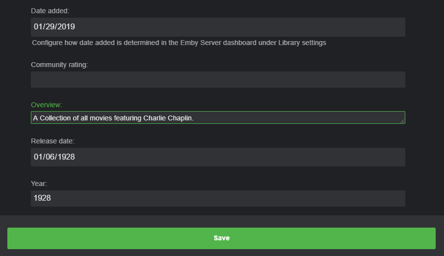

Sammlungen
Sammlungen sind Gruppierungen von ähnlichen Medien wie zum Beispiel:
Zurück in die Zukunft Sammlung
- Zurück in die Zukunft
- Zurück in die Zukunft II
- Zurück in die Zukunft III
Die Terminator Sammlung
- Terminator
- Terminator 2: Tag der Abrechnung
- Terminator 3: Rebellion der Maschinen
- Terminator: Die Erlösung
- Terminator Genisys
Automatische Erstellung von Sammlungen Sammlungen für Filme können automatisch von Emby Server erstellt werden, indem Sie jede Film-Bibliothek auf Ihrem System konfigurieren.
Es gibt nur zwei Einstellungen, die gesetzt werden müssen. Die erste Option besteht darin, ob Sammlungsinformationen importiert werden sollen oder nicht.
Die zweite Option ist die erforderliche Anzahl von Filmen, die Ihr System haben muss, um als Sammlung betrachtet zu werden.
Manuelles Erstellen einer Sammlung
Um eine Sammlung manuell zu erstellen, beginnen Sie mit einem Film, einer Serie oder einem anderen Element in Ihrer Emby-Bibliothek. Öffnen Sie das Kontextmenü für dieses Element mit einer der folgenden Methoden:
- Rechtsklick auf das Poster
- Verwenden Sie das 3-Punkte-Menü auf dem Detailbildschirm
- Fahren Sie mit der Maus über das Poster und verwenden Sie das 3-Punkte-Menü

Wenn das Kontextmenü erscheint, wählen Sie "Zur Sammlung hinzufügen". Es erscheint ein Popup, in dem Sie das Element zu einer vorhandenen Sammlung hinzufügen oder eine neue erstellen können.

Die einfachste Möglichkeit, Bildkunst und Metadaten automatisch herunterzuladen, besteht darin, denselben Namen wie die Sammlung auf TheMovieDb.Org zu verwenden.
Sie können den Namen auf TheMovieDb.Org überprüfen, indem Sie eine "Sammlung"-Suche auf deren Seite durchführen, z. B. "Star Wars Sammlung". In diesem Fall würden vier Sammlungen zurückgegeben, die Sie abgleichen können:
Star Wars Sammlung Lego Star Wars Sammlung Robot Chicken: Star Wars Sammlung Star Wars: Die Ewok Abenteuer Sammlung Wählen Sie einfach den richtigen Sammlungsnamen aus den zurückgegebenen Ergebnissen.
Wie bereits erwähnt, können Sie mehrere Filme gleichzeitig zu einer Sammlung hinzufügen und auch Sammlungsnamen verwenden, die nicht auf TheMovieDb.Org stehen. Hier ist ein Beispiel für eine Sammlung, die nützlich ist, um Filme eines bestimmten Künstlers zu gruppieren, wie z. B. Charlie Chaplin.
Zuerst drücken wir lange auf das erste Poster, das wir hinzufügen möchten, bis wir dies erhalten
Als Nächstes klicken wir oben links auf das Kästchen, um weitere Filme auszuwählen, und dann klicken wir oben rechts auf das 3-Punkte-Menü.

Wir füllen die richtigen Informationen aus und klicken auf OK, um eine neue Sammlung zu erstellen.

Wir haben jetzt eine Sammlung für Charlie Chaplin ohne Poster-Kunst oder Metadaten hinzugefügt.

Als Nächstes können wir unsere eigenen Informationen hinzufügen, indem wir die Sammlung bearbeiten. Zuerst können wir den Text bearbeiten, der für die Sammlung angezeigt wird. Wir tun dies, indem wir auf das 3-Punkte-Menü klicken und "Metadaten bearbeiten" aus dem Popup-Menü auswählen. Dann scrollen wir nach unten und füllen unsere Beschreibung im Feld "Übersicht" aus und klicken dann auf Speichern.

Wir fügen manuell Cover-Bilder hinzu, indem wir einen ähnlichen Prozess durchführen. Wir klicken auf das 3-Punkte-Menü und wählen "Bilder bearbeiten" aus dem Popup-Menü.
Nun klicken wir auf das PLUS-Zeichen oben, um zu diesem Bildschirm zu gelangen

Hier haben Sie mehrere Möglichkeiten. Sie können ein Bild in das gestrichelte Feld ziehen und ablegen oder auf die Schaltfläche Durchsuchen klicken, um ein lokales Bild auf Ihrem Computer zu finden. Neben dem Navigieren und Auswählen lokaler Dateien gibt es einen cleveren Trick, den Sie verwenden können, um automatisch Kunstwerke aus dem Internet herunterzuladen.
Wenn Sie eine neue Registerkarte in Ihrem Browser öffnen, können Sie eine Google-Bildersuche nach Charlie Chaplin durchführen. Sobald Sie ein Bild gefunden haben, das Sie interessiert, klicken Sie mit der rechten Maustaste auf das Kunstwerk und wählen Sie die Option "Bildadresse kopieren".
Jetzt, da wir uns wieder auf unserem Emby-Tab befinden, klicken wir auf die Schaltfläche Durchsuchen, die ein Dialogfeld öffnet (auf Windows). Wir klicken dann mit der rechten Maustaste auf das Feld Dateiname, um die zuvor aus dem Internet kopierte Adresse in dieses Feld einzufügen.
Nach dem Einfügen des Links klicken Sie auf die Schaltfläche Windows Öffnen und Emby importiert das Bild.

Wir können nun sehen, dass das Bild in den Emby-Dialog importiert wurde und wir bereit sind, es hochzuladen, indem wir auf die Schaltfläche Hochladen klicken. Es wird nun dem Server hinzugefügt.

Wir könnten bei Bedarf zusätzliche Bilder hinzufügen, aber da wir nur ein Bild für unseren Bedarf benötigen, klicken wir auf den linken Pfeil oben im Dialog.

Wir haben nun eine abgeschlossene manuelle Sammlung, die wir bearbeitet haben. Wie Sie im Bild und im Menü Metadaten bearbeiten sehen können, gibt es zusätzliche Informationen, die Sie bearbeiten können, wie Bewertungen, Jahr, Genres und andere Informationen.
Elemente aus einer Sammlung entfernen
Um ein Element aus einer Sammlung zu entfernen, navigieren Sie zuerst zum Detailbildschirm dieser Sammlung. Jedes Element in der Sammlung verfügt über ein 3-Punkte-Menü.
Um ein Element zu entfernen, klicken Sie auf das 3-Punkte-Menü und wählen Sie dann "Aus Sammlung entfernen".